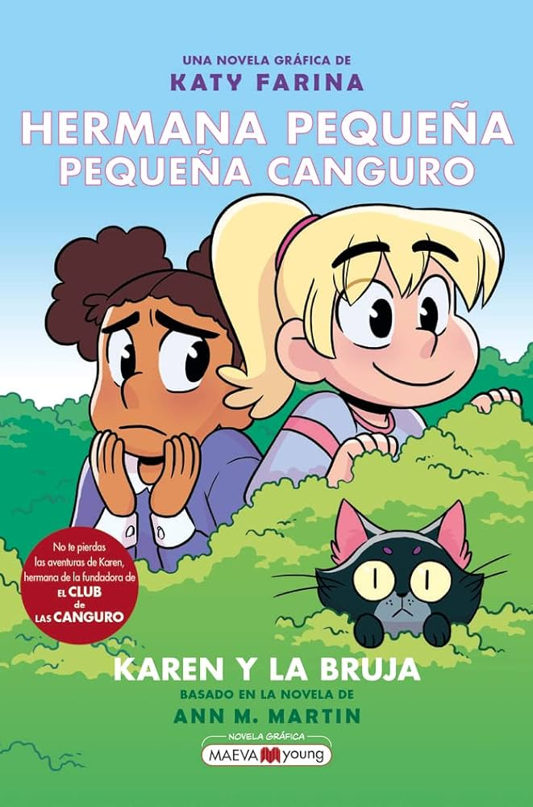
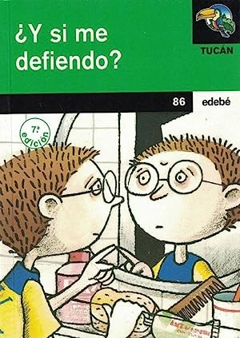

Aprender a identificar, expresar y resolver desacuerdos de forma pacífica y constructiva
Palabras puente
Los alumnos reflexionan sobre palabras que favorecen la reconciliación como 'perdón', 'gracias', 'comprendo' o 'compartamos'. Luego, en pequeños grupos, dramatizan situaciones donde esas palabras ayudan a resolver un conflicto. Esta actividad enseña la importancia del lenguaje conciliador para fomentar la paz escolar.
Cambio de rol
En parejas, los estudiantes representan un conflicto escolar, como una discusión por un material. Luego intercambian roles para comprender el punto de vista contrario. Esta técnica teatral fomenta la empatía, mejora la comprensión mutua y ayuda a generar soluciones más justas.
El mediador imparcial
Se forma un trío: dos estudiantes en un conflicto ficticio y un tercero que actúa como mediador. Se entrena al mediador en escuchar activamente, resumir lo dicho y proponer soluciones. Esta dinámica entrena habilidades sociales clave y promueve la resolución autónoma de conflictos.
Semáforo emocional
Utilizando los colores del semáforo, los alumnos identifican sus emociones ante conflictos: rojo (me detengo porque estoy muy molesto), amarillo (pienso antes de actuar), verde (actúo con calma). Esta técnica visual fortalece el autocontrol y facilita el reconocimiento emocional.
El micrófono de la paz
Con un objeto simbólico (micrófono), se da la palabra a quien desea expresar cómo se sintió durante un conflicto. Los demás escuchan sin interrumpir. Fomenta la escucha activa, la expresión de sentimientos y el respeto por la palabra ajena en el entorno escolar.
Semáforo emocional
Con cartulinas verde, amarilla y roja, los alumnos analizan sus emociones ante conflictos. Rojo (alto), amarillo (piensa), verde (actúa). Favorece el autocontrol y reflexión.
El micrófono de la paz
En grupo, solo quien sostiene el 'micrófono' puede hablar. Se expresan opiniones sobre un conflicto común. Fomenta el respeto del turno de palabra y la escucha activa.
Teatro sin palabras
Grupos representan conflictos sin hablar. El público interpreta y sugiere soluciones. Trabaja la expresión corporal, el análisis y la resolución creativa.
Ideas para la paz
Tormenta de ideas grupal sobre cómo resolver conflictos cotidianos en clase o en casa. Se votan las mejores y se ilustran. Desarrolla pensamiento cooperativo.
Cadena de acuerdos
Cada grupo crea una 'cadena' donde cada eslabón es un acuerdo de convivencia. Se une a la de otros grupos. Refuerza el trabajo colaborativo y los valores comunes.
Yo me siento...
Los alumnos completan frases como 'Yo me siento...' ante situaciones molestas. El grupo reflexiona sobre cómo comunicar sin atacar. Fomenta la comunicación asertiva.
Dado del conflicto
Un dado gigante con preguntas como: ¿qué sientes?, ¿qué necesitas?, ¿cómo lo resolverías? Se usa en simulaciones de desacuerdos. Promueve el análisis emocional.
Gestos que calman
En pequeños grupos, identifican gestos o acciones que ayudan a calmar una discusión. Los representan y comparten. Refuerza la empatía y la inteligencia emocional.
Con los lentes del otro
Los alumnos eligen una situación conflictiva y escriben cómo la ve cada parte. Luego lo leen en voz alta. Fomenta la descentralización del propio punto de vista.
Compromiso semanal
Cada alumno se compromete a una acción pacífica durante la semana. Se revisa si lo cumplió. Potencia la constancia en el comportamiento propositivo.
La varita del acuerdo
En un conflicto ficticio, quien sostiene la varita debe proponer soluciones. Estimula la creatividad y la participación equitativa.
Cartas de reconciliación
Los alumnos escriben cartas simuladas para disculparse o pedir diálogo en un conflicto. Las leen en voz alta. Desarrolla habilidades de expresión emocional.
Historias transformadas
Se leen cuentos con conflicto y se reescribe el final con una solución pacífica. Potencia la imaginación orientada al bien común.
Círculo de palabra
Se abordan conflictos reales del grupo desde el diálogo respetuoso en círculo. Reglas: escucha, sin interrupciones, sin juzgar. Refuerza la convivencia.
Apagando incendios
Se asigna a pequeños grupos la misión de 'apagar' conflictos comunes que aparecen en tarjetas. Deben proponer soluciones rápidas y positivas.
Ponte en mis zapatos
Dramatización donde cada niño interpreta a otro compañero que ha tenido un conflicto. Se reflexiona sobre emociones y malentendidos. Refuerza la empatía.
Misión: reconciliar
Actividad gamificada donde el grupo tiene una misión: resolver 3 casos de conflicto. Deben seguir pautas de mediación para lograrlo y ganar puntos de paz.
La mediación como herramienta de prevención de la violencia escolar
Documento que aborda la mediación entre iguales como recurso preventivo en centros educativos.
Dos náufragos con personalidades distintas deben aprender a convivir. Enseña cooperación, escucha activa y respeto mutuo.
Carrot Crazy
Dos cazadores compiten por atrapar conejos. Perfecto para hablar de competencia destructiva y consecuencias de la obsesión.
La rama de olivo
Un conflicto entre dos ratones se transforma en una metáfora de paz. Ideal para explicar mediación y acuerdos justos.
El pequeño zapatero
Mr. Minino y un cliente malhumorado deberán encontrar la forma de entenderse. Fomenta empatía y gestión emocional.
Día y noche
Dos personajes distintos se enfrentan hasta que descubren que sus diferencias pueden complementarse. Maravilloso para trabajar inclusión.
Presto
Un mago y su conejo chocan por falta de reconocimiento. Ideal para debatir sobre respeto y trabajo en equipo.
MarMar enseña resolución de conflictos
Vídeo corto y ameno donde MarMar explica cómo manejar conflictos con compañeros de forma pacífica y divertida.
El Puente
Cortometraje que plantea un conflicto simbólico y enseña cómo alcanzan un acuerdo respetuoso entre dos partes.
Resolución de conflictos: Asertivo, Agresivo, Pasivo
Explica claramente estilos de comunicación (agresivo, pasivo, asertivo) y cómo elegir el adecuado para resolver conflictos.
Conflict Resolution Strategies
Demuestra cómo la empatía y la escucha activa ayudan a solucionar malentendidos y problemas comunes.
Ayudando a los niños a resolver conflictos
Sesame Street ofrece herramientas visuales y situaciones cotidianas para enseñar mediación y resolución emocional.
Perspective and Empathy: Lesson on Conflict
Explora cómo adoptar diferentes puntos de vista y practicar la empatía mejora la resolución de conflictos.
Mejor ejemplo de mediación y resolución de conflictos
Desde el liderazgo, resulta básico tratar de averiguar cual es la "media naranja" que le interesa a nuestros colaboradores para actuar a favor de la misma y no en contra.
Elbow Room – conflicto y espacio personal
Edad: 6–12 años • Tiempo: 5 min
Cortometraje animado que plantea conflictos por el espacio personal y enseña a resolverlos mediante comunicación y respeto mutuo.
B‑resol (app anti‑bullying)
Permite a alumnos enviar alertas o mensajes sobre un conflicto de forma anónima a través del centro, favoreciendo la gestión y mediación.
Revisión de estrategias TIC para mediar conflictos en el aula, destacando la comunicación digital y proyectos interactivos :contentReference[oaicite:1]{index=1}.
Herramienta online desde la Universidad de la Sabana con recursos digitales para mediar conflictos y planificar actividades de convivencia escolar :contentReference[oaicite:2]{index=2}.
Juego de realidad aumentada diseñado para fomentar la colaboración, el sentido de pertenencia y prevención de conflictos en grupos de 10+ años :contentReference[oaicite:4]{index=4}.
Las divertidas travesuras de Nicolás y su pandilla muestran cómo resolver malentendidos y conflictos entre amigos con humor y empatía. :contentReference[oaicite:4]{index=4}
El congreso de los ratones
Edad: 9–12 años
Una fábula clásica adaptada donde los ratones deben cooperar para afrontar un peligro común, aprendiendo a debatir, organizarse y llegar a acuerdos.

Hermana pequeña, pequeña canguro
Autor: Ann M. Martin Edad: 9–12 años
Una historia sobre burlas escolares y aceptación personal. La protagonista aprenderá a lidiar con la incomodidad del grupo social y redefinir sus vínculos. :contentReference[oaicite:4]{index=4}

¿Y si me defiendo?
Autor: Elisabeth Zöller Edad: 10–12 años ISBN: 978‑84‑236‑7931‑7
Krissi sufre acoso escolar de un grupo de matones. Huyendo, provoca que compañeros, familia y profesorado reflexionen sobre su situación hasta intervenir y ayudarle. Trata el miedo, la necesidad de apoyo, la comunicación y la mediación en la escuela. :contentReference[oaicite:1]{index=1}
Tú ganas, yo gano
Autor: David L. Anderson & Mary Scannell Edad: 10–14 años aproximado
Manual dinámico con estrategias para transformar conflictos en soluciones creativas donde todos ganan: asertividad, escucha activa, desactivar luchas de poder y fomentar la comunicación cooperativa. :contentReference[oaicite:1]{index=1}
Resolución de conflictos para niños
Autor: Joss Reed Edad: 8–12 años ISBN: 979‑8892961325
Guía ilustrada con estrategias prácticas para que los niños aprendan a dialogar, escuchar activamente, expresar sus emociones y resolver disputas de forma pacífica. Parte de la serie "Detectives emocionales". Publicado en junio 2024. :contentReference[oaicite:1]{index=1}
Pequeños mediadores
Autor: Blanca Martí de Ahumada y Varios Edad: 6–12 años ISBN: 978‑84‑17841‑28‑7
Colección de cuentos ilustrados con material didáctico. Enseña a comprender conflictos, escuchar a los demás y aplicar herramientas básicas de mediación adaptadas a la infancia. :contentReference[oaicite:1]{index=1}